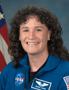

Lyndon B. Johnson Space Center
Houston, Texas 77058
|
National Aeronautics and Space Administration Lyndon B. Johnson Space Center Houston, Texas 77058 |
 |
Biographical Data |
||
SERENA M. AUÑÓN (M.D.)
NASA Astronaut
PERSONAL DATA: Born on April 9, 1976, in Indianapolis, Indiana. Considers Fort Collins, Colorado, to be her hometown. Recreational interests include basketball, softball, martial arts, cricket, hiking and jet skiing.
EDUCATION: Graduated from Poudre High School, Fort Collins, Colorado in 1993. Received a Bachelor of Science in Electrical Engineering from The George Washington University, Washington, D.C., in 1997 and a Doctorate of Medicine from The University of Texas - Health Science Center at Houston in 2001. Completed a three-year residency in internal medicine at The University of Texas Medical Branch (UTMB) in Galveston, Texas, in 2004, and then completed an additional year as chief resident in the Internal Medicine Department in 2005. She also completed an aerospace medicine residency at UTMB as well as a Master of Public Health in 2007. She is board certified in Internal and Aerospace Medicine.
ORGANIZATIONS: American College of Physicians; American College of Preventive Medicine; Alpha Omega Alpha Medical Honor Society; Aerospace Medical Association and Tau Beta Pi, The National Engineering Honor Society
SPECIAL HONORS: United States Air Force Flight Surgeons Julian Ward Award (2009), Outstanding UTMB Resident Award (2007), William K. Douglas Award (2006), Alpha Omega Alpha Honor Society (2005), Thomas N. and Gleaves James Award for Excellent Performance by a Third-Year Resident in Internal Medicine (2004).
EXPERIENCE: Dr. Auñón came to Johnson Space Center in August 2006, employed as a Flight Surgeon under the UTMB/Wyle Bioastronautics contract. She spent more than nine months in Russia supporting medical operations for International Space Station crew members in Star City, including water survival training in the Ukraine. Dr. Auñón served as the Deputy Crew Surgeon for STS-127. She also held the role of Deputy Lead for Orion - Medical Operations.
NASA EXPERIENCE: Dr. Auñón was selected in July 2009 as one of 14 members of the 20th NASA astronaut class. She graduated in November 2011 from Astronaut Candidate Training that included scientific and technical briefings, intensive instruction in space station systems, Extravehicular Activities (EVAs), robotics, physiological training, T-38 flight training and water and wilderness survival training. Currently, Dr. Auñón serves in the International Space Station Operations Branch to handle medical issues and the Capsule Communicator (CAPCOM) Branch as a certified space station CAPCOM.JULY 2013